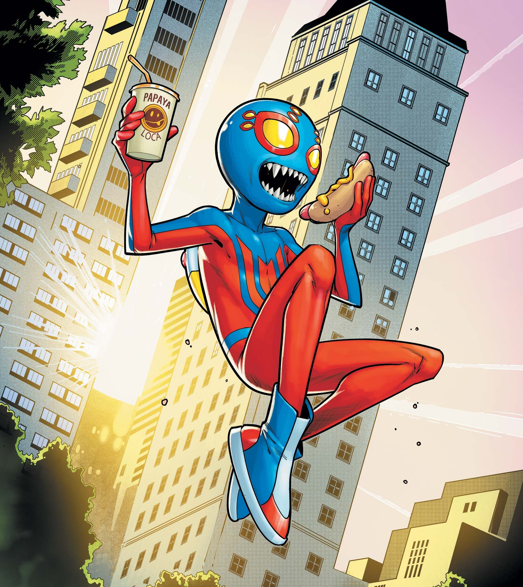
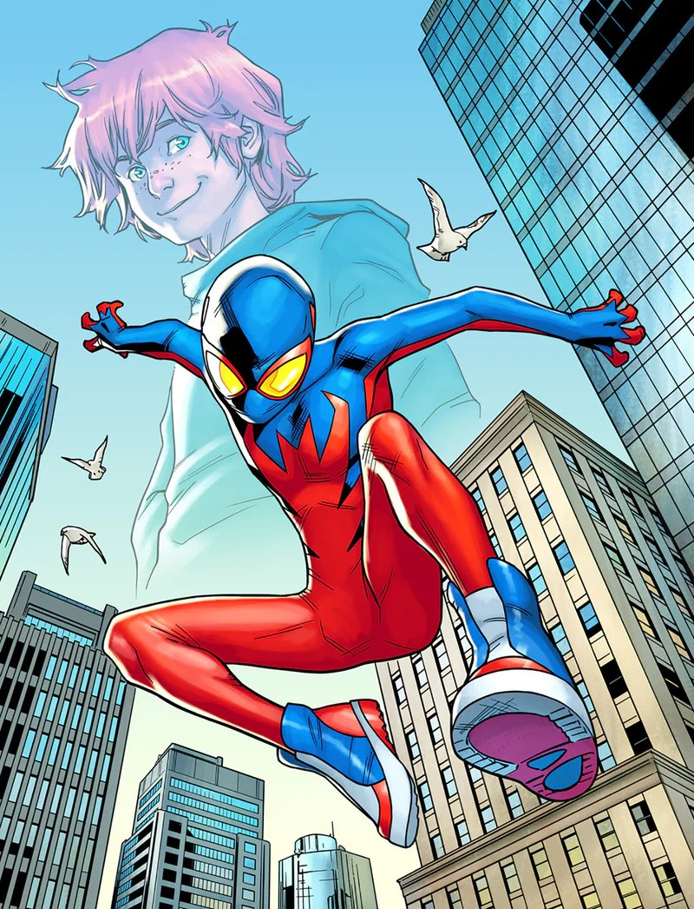

Spider-Boy
Alter ego: Bailey Bartholomew Briggs

Species: Human mutate
Place of Origin: Brooklyn, New York, USA
Team Affiliations: Spider-Army
Partnerships: Peter Parker / Spider-Man; Gwen / Kidpool

Notable Aliases: Spider-Boy; Spider-B
Abilities: Superhuman strength, agility, stamina, and reflexes; Precognitive spider-sense; Wall-crawling; Venom bite; Spider-speaking